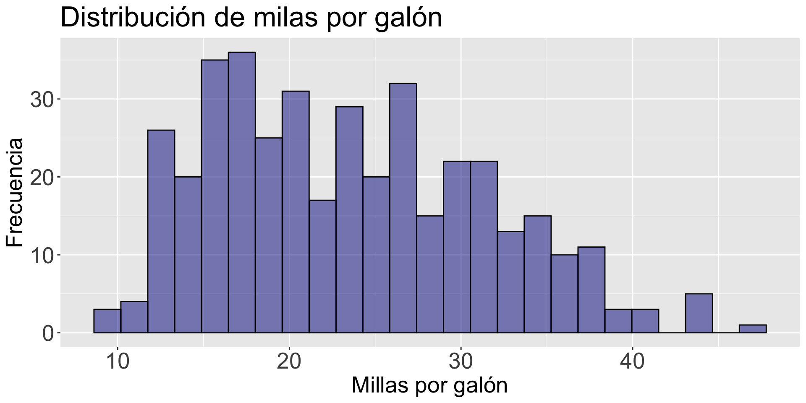

Sesión 7:
Datos de múltiples variables
Una nueva librería
Hoy, utilizaremos una librería llamada dplyr para generar resúmenes estadísticos cuando tenemos más de una variable.

La librería dplyr es una herramienta para la manipulación y transformación de datos.
Es parte del tidyverse.
Cárgala en Google Colab con el siguiente código.
Gráficas individuales
Las gráficas individuales de variables ( como el histograma) no permiten estudiar la relación entre dos variables. Solo dan información de la distribución cada variable.
Code
histogram_mpg <- gf_histogram( ~ mpg, data = auto_data, fill = "darkblue", color = "black")
histogram_mpg <- histogram_mpg + labs(title = "Distribución de milas por galón", x = "Millas por galón", y = "Frecuencia")
histogram_mpg <- histogram_mpg + theme(axis.text=element_text(size=20), axis.title=element_text(size=20),
plot.title=element_text(size=25))
histogram_mpg
Code
histogram_weight <- gf_histogram( ~ weight, data = auto_data, fill = "darkblue", color = "black")
histogram_weight <- histogram_weight + labs(title = "Distribución de peso", x = "Peso (lb)", y = "Frecuencia")
histogram_weight <- histogram_weight + theme(axis.text=element_text(size=20), axis.title=element_text(size=20), plot.title=element_text(size=25))
histogram_weight
Gráfica de cajas por grupos
La gráfica de cajas lado a lado nos permite comparar la distribución de una variable en diferentes grupos.
Para generar la gráfica, usamos la función
gf_boxplot(Y ~ X, data = dataset).

Mejorando la gráfica
Code
bp_mpg_by_origin <- gf_boxplot( mpg ~ origin, data = auto_data, fill = "lightblue", color = "black")
bp_mpg_by_origin <- bp_mpg_by_origin + labs(y = "Millas por galón", x = "Origen")
bp_mpg_by_origin <- bp_mpg_by_origin + theme(axis.text=element_text(size=20), axis.title=element_text(size=20))
bp_mpg_by_origin
Marcadores de referencia
Marcadores de referencia aportan contexto adicional a la región de trazado. Los puntos y líneas de referencia que proporcionan puntos de referencia, valores históricos y otra información externa ayudan a formar comparaciones e interpretaciones.
[EXAMPLES OF LABELING MARKERS]